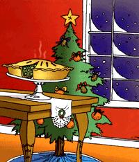

It was a winter morning in suburban New York, and I was sharing with my young sons a favorite breakfast treat, homemade corn muffins. My sons' devouring eagerness had already told me that the muffins were delicious-and I agreed, just before I remarked that I could probably cut down the sugar even more. My younger son looked up from his plate in exasperation, "Gee, Mom, just when you get something perfect you have to make it healthier."
Stabbed to the heart! He was absolutely right. Where raising the bar is concerned, I have tended to be insufferable. Eager as I am, however, to crusade for local food in season, this does seem an ideal time of year to lower the bar. Winter, after all, offers those many occasions for celebration that cluster around the longest night of the year, and some of what we celebrate ought surely to be treats-including non-local food.
As an Earth-lover, I've grown attached to observing the solstice, but the holiday I grew up with is Christmas. I was a California child whose mother read Charles Dickens to her girls at bedtime; I grew up yearning for snowy Christmases, horse-drawn sleighs and hearty British feasts. For me, the climax of the Christmas feast was always gooseberry pie.
Our guests at every Christmas dinner were a family-a mother with two unmarried daughters close to my mother's age-from my parents' home state of Iowa. Though childless, the daughters were confident they knew better than my mother how young people ought to be raised, so my sister and I were required to endure in silence their frequent critiques of our manners. What made the holiday dinner tolerable was that their mother always arrived bearing German anise picture cookies and gooseberry pie.
Nothing I know of tastes anything like gooseberry pie. It has an insistently tart sweetness that is surprising, and habit-forming. My first Christmas away from home, in 1950-with my whole family across the continent in California-I tried all over New York City to get fresh gooseberries. I finally found two cans of gooseberries for a price that was about 20 percent of a week's salary-but well worth it to me. I included a recipe for gooseberry pie in my book, This Organic Life, because the only one I had was from a very old book and I feared the secret would be lost.
But if we're talking about lowering the bar on eating locally grown foods, gooseberry pie doesn't qualify-not where I come from anyway. There are other favorite holiday treats that are non-local for most of us, and that seem to symbolize, each in its own way, the sorts of exceptions the winter holidays ought to allow. Let's start with some especially healthy ones-kiwis, clementines and grapefruit.
One Christmas my sister sent me a box of kiwifruits that lasted in our cold cellar until March. (They'd probably last equally well in an unheated closet or the refrigerator.) Their durability made them a marvelous addition to the difficult season. Even better, we could grow kiwi locally-at least that's what my husband and I thought. We planted two hardy kiwi. In seven years, the plants grew lustily, producing only leaves. The two of them (they need to mate) probably didn't get enough sun, but one never knows for sure.
There's no kiwi yet in my new garden, but I believe that special foods ought to be allowed in any sort of relocalized economy, so I really don't feel guilty buying a box of kiwis for the winter.
I feel the same about clementines, a variety of mandarin orange. Since I first started preaching about local eating a quarter of a century ago, citrus has been the deprivation symbol of choice for my critics. Suggest eating locally here in the Northeast, and the next thing you know someone is snarling, "So you're saying I can't ever have an orange again?" I'm not saying that, although it's true that citrus fruit just doesn't grow where most of us live. For including non-local foods in a mostly local diet, moderation is the key.
For those living in climates too cold for citrus culture, an orange in the toe of a Christmas stocking has long been an image of specialness. I also think imported clementines, shipped from Spain in little wooden crates just when their sunshine is most welcome, ought surely to be allowed as a special Christmas treat.
And as my gooseberry pie commitment illustrates, sentiment strongly influences my choice of winter treats. Every Christmas my mom used to send my family a big box of juicy-sweet, red Texas grapefruit that we ate at the rate of one or two a day until they were gone. Now that she's gone, I decided to maintain her grapefruit tradition. When I order for friends, I order for myself as well, and spend January happily making my way through a box of sunny fruits.
Since this season is gift-giving time for many of us, it's warming to realize there are truly exotic foods we can give as presents that also are a gift to those who grow them. Coffee, tea, chocolate, nuts and spices can be purchased through groups who assure a living wage for the producers.
At our winter solstice bonfire, most of us celebrants bring hot coffee. Learning to feel OK about drinking coffee led me long ago to the best source for non-local treats: the Fair Trade movement, which connects producers in unindustrialized countries directly to consumers in the industrialized world. By cutting out exploitative middlemen, Fair-Traders can pay the farmers a livable wage for their products, even when the market price nosedives. I get my coffee by mail from Equal Exchange ( www.equalexchange.com ), a pioneer in the movement.
[Mother Earth News now distributes its own delicious coffee, which is triple-certified to be fairly traded, certified organic and shadegrown. See Page 9.]
I just learned about the unprocessed chocolate bits offered by One World Projects ( www.oneworldprojects.com ). These little snacks come from rainforest protecting cacao growers who are paid two to three times the local market price for their beans. Friends of the Third World is a pioneer cooperative trader of not only coffee, but tea, chai and other exotic beverages, chocolate from Ghana and cocoa powder from the Dominican Republic. They also offer organic cashews from a Honduran cooperative, Brazil nuts from Peru, a variety of tropical spices, and specialty foods from American Indian and other cooperatives right here in the United States. To learn more about other fair trade groups, contact Co-Op America; 1612 K Street NW, #600; Washington, DC 20006; (800) 584-7336; www.coopamerica.org . Co-op America's
National Green Pages can connect you to thousands of socially and environmentally responsible businesses ( www.greenpages.org ).
It's not only where our foods come from that counts-we waste way too much energy moving everything we eat around-it's how the foods are grown and whether their producers benefit. When we buy from local farmers, we help guarantee their livelihood. By learning where our distant treats come from, we can support Third World farmers as well.
For a limited time, MOTHER is offering a special price of $9.95 for the hardcover version of Joan Gussow's best-selling book, This Organic Life. See MOTHER's Bookshelf, Page 88.
|
 |
|
|